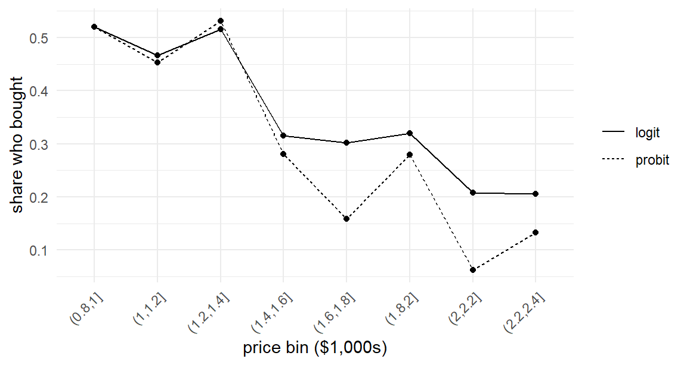

In Chapter 1 we simulated a probability: many draws of \(\varepsilon\) for one fixed choice situation. In this chapter we simulate a dataset: one draw of \(\varepsilon\) for each of many choice situations. The code changes less than you might expect — in both cases we draw unobservables and push them through the behavioral rule \(h\) — but the interpretation changes completely. The draws now play the role of the real-world unobservables themselves, and the output is a set of synthetic observations that look exactly like data you might collect.
Why manufacture fake data when the world is full of real data? Three reasons, in increasing order of importance for this book:
Simulation is the proof that you understand the model. A model is a description of a data generating process. If you cannot write the twenty lines of code that generate data from that process, then somewhere in the chain — the utility specification, the error distribution, the choice rule — sits an assumption you do not actually understand. The mantra from the opening of this book operationalizes here.
Simulated data come with an answer key. You chose the true parameters, so you know exactly what an estimator should find. With real data you can never distinguish “my estimator is broken” from “the world is surprising.” With simulated data there is no ambiguity, which makes simulation the ultimate debugging environment for estimation code.1
The whole workflow of this book depends on it. Every estimator we build — maximum likelihood in Chapter 8, simulated likelihood in Chapter 13, Gibbs samplers in Chapter 17 — will be validated the same way: simulate data with known parameters, estimate, compare. This simulate-and-recover loop is the central discipline of computational statistics, and this chapter builds its first half.
3.1 The Anatomy of a Simulation Script
Recall the framework of Chapter 1. A choice model specifies a behavioral rule \(y = h(\mathbf{x}, \boldsymbol{\varepsilon})\) and a density \(f(\boldsymbol{\varepsilon})\). To simulate data from the model is to run the data generating process forward, once per observation. Every simulation script in this book — no matter how elaborate the model — has the same six steps:
Set the sizes. How many decision-makers \(N\)? (Later: how many choice situations \(T\), alternatives \(J\)?)
Set the true parameters. Choose \(\boldsymbol{\beta}\) (and later, covariance matrices, class shares, …). These are the values we will demand our estimators recover.
Generate the observables. Create the attribute values \(\mathbf{x}\) for every choice situation.
Draw the unobservables. One draw of \(\boldsymbol{\varepsilon}\) from \(f\) per choice situation — the inverse-transform skills of Chapter 2.
Compute utilities. Combine steps 2–4 through the utility function.
Apply the choice rule. Record \(y = h(\mathbf{x}, \boldsymbol{\varepsilon})\) for every observation.
Steps 3 and 4 both call random number generators but play entirely different roles, and confusing them is a common beginner error. The observables in step 3 are random only because we are inventing a dataset; in a real study they would come from your experimental design or your survey. The unobservables in step 4 are random inside the model: they are the \(\boldsymbol{\varepsilon}\) of Equation 1.1, and their distribution \(f\) is part of the model specification. When we later estimate models, step 3’s values will be data we condition on, while step 4’s values will be gone — visible only through their fingerprints on the choices.
3.2 Example: Simulating Binary Logit Choices
Let’s simulate the laptop-offer setting of Section 1.3 at scale. Each of \(N\) shoppers is shown one configured laptop — a price drawn from the study’s range and either the base 8GB or upgraded 16GB memory — and decides whether to buy it. The model, assembled from Equation 1.3 through Equation 1.5:
with \(\mathbf{x}_n = (1, \texttt{price}_n, \texttt{ram16}_n)\) and the true parameter vector we fixed in Section 1.4: \(\boldsymbol{\beta}^\ast = (1.0, -1.2, 0.6)\). The subscript \(n\) now indexes shoppers, \(n = 1, \ldots, N\) — our notation for decision-makers from here on.
Here is the script, with the six steps labeled:
set.seed(30)## 1. sizesN <-500## 2. true parametersbeta <-c(1.0, -1.2, 0.6)## 3. observables: one laptop offer per shopperprice <-runif(N, min =0.8, max =2.4) # in $1,000sram16 <-rbinom(N, size =1, prob =0.5) # memory upgrade?X <-cbind(1, price, ram16) # N x 3 matrix## 4. unobservableseps <-rlogis(N)## 5. utilitiesU <-as.vector(X %*% beta) + eps## 6. choicesy <-as.integer(U >0)head(data.frame(y, price, ram16), 4)
Twenty lines, most of them comments. A few implementation notes deserve attention, because the same patterns recur in every simulator we write:
The design matrix X. We assemble the observables into an \(N \times K\) matrix whose columns match the entries of \(\boldsymbol{\beta}\), including a leading column of ones for the intercept. The matrix product X %*% beta then computes all \(N\) representative utilities \(V_n = \mathbf{x}_n'\boldsymbol{\beta}\) (the \(V\) of Section 1.3, now one per shopper) in one operation. This is our first taste of a theme that Chapter 9 develops fully: organizing data as matrices lets R do the arithmetic in compiled code.
as.vector(). Matrix multiplication returns an \(N \times 1\) matrix; coercing to a plain vector avoids surprises when we add the (vector) draws eps. Small thing, classic bug.
One draw per shopper. Compare with Section 1.3, where we took a thousand draws for a single\(\mathbf{x}\). Here each shopper gets exactly one \(\varepsilon_n\) — their own private circumstances on decision day.
How many shoppers bought?
mean(y)
[1] 0.368
About 37% — reasonable for laptops priced deliberately on the expensive side. This single number is already a sanity check: a purchase share of 0.99 or 0.01 would send us hunting for a misplaced sign or a wildly mis-scaled price before writing another line.
3.3 Example: Simulating Binary Probit Choices
Now the punchline of this pair of examples. The binary probit model is identical to the binary logit in every respect except one: the unobservables are standard normal rather than logistic. In the six-step anatomy, only step 4 changes; in the code, only one line:
set.seed(31)eps_p <-rnorm(N) # <- the only changeU_p <-as.vector(X %*% beta) + eps_py_p <-as.integer(U_p >0)mean(y_p)
[1] 0.318
Everything you believe about a statistical model is a specific line of code in its simulator. The choice of error distribution — the difference between “logit” and “probit,” between closed-form choice probabilities (Chapter 7) and integrals requiring simulation (Chapter 18) — is the difference between rlogis(N) and rnorm(N).2
Can you tell the two datasets apart by looking? Here are their purchase rates plotted against price:
bins <-cut(price, breaks =seq(0.8, 2.4, by =0.2))shares <-rbind(data.frame(bin =levels(bins), model ="logit",share =tapply(y, bins, mean)),data.frame(bin =levels(bins), model ="probit",share =tapply(y_p, bins, mean)))ggplot(shares, aes(x = bin, y = share, group = model, linetype = model)) +geom_line() +geom_point(size =1.5) +labs(x ="price bin ($1,000s)", y ="share who bought", linetype =NULL) +theme(axis.text.x =element_text(angle =45, hjust =1))

Figure 3.1: Purchase shares by price bin for one simulated logit dataset and one simulated probit dataset (N = 500 each). The error distribution that separates the two models is essentially invisible in raw data summaries.
Not really — both fall with price, with sampling noise dominating any difference in curve shape. Two lessons hide in this modest picture. First, model assumptions about unobservables are not readable off raw data; distinguishing logit from probit takes likelihood-based tools (and even then, Chapter 18 will show, the practical differences are subtle). Second, and more optimistically: since the models are so similar, the estimation machinery we build for one will transfer to the other with small changes — the exact program of Part IV.
3.4 Packaging the Simulator as a Function
We will need to simulate binary choice data again — in Chapter 5 to feed our first likelihood, in Chapter 6 to test our first optimizer, in Chapter 16 to check the Albert–Chib sampler. Copy-pasting the script each time invites drift: a tweak here, a forgotten seed there, and soon no two chapters use quite the same data generating process. The remedy is to package the simulator as a function with explicit arguments.
Doing so forces a design decision worth pausing over: what should be an argument, and what should be internal? Three reasonable designs:
(a) Everything internal.sim_binary_data() with no arguments, returning one canonical dataset. Simple, but useless the moment we want a different \(N\) or \(\boldsymbol{\beta}\) — and we will want both, e.g., to study how estimator precision varies with sample size in Chapter 8.
(b) Pass the design matrix in.sim_binary_data(X, beta). Maximally flexible — the caller controls the covariates entirely — and the right choice when a real study’s design is fixed. But every call now requires boilerplate to build X.
(c) Generate covariates internally, parameters as arguments. The function owns the study design (prices uniform on the study range, memory upgrades at random) while the caller controls the scientific quantities (\(N\), \(\boldsymbol{\beta}\)).
We choose (c), with (b)’s escape hatch: covariates are generated internally by default, but a caller who needs custom covariates can supply their own X. This layered design — sensible defaults, full control available — costs three lines and is a pattern worth stealing for your own work:
sim_binary_data <-function(N, beta, X =NULL,dist =c("logistic", "normal")) { dist <-match.arg(dist)if (is.null(X)) { price <-runif(N, min =0.8, max =2.4) ram16 <-rbinom(N, size =1, prob =0.5) X <-cbind(1, price, ram16) } eps <-switch(dist,logistic =rlogis(N),normal =rnorm(N)) U <-as.vector(X %*% beta) + epsdata.frame(y =as.integer(U >0), X[, -1, drop =FALSE])}set.seed(32)d <-sim_binary_data(N =500, beta =c(1.0, -1.2, 0.6))head(d, 3)
Note the dist argument: because logit and probit differ by one line, one simulator serves both models, and the difference is now named rather than buried. The function returns a plain data frame — one row per shopper, the choice and the attributes, no intercept column — because that is the shape of real choice data arriving on your desk. Rebuilding the intercept-bearing X matrix from such a data frame is precisely the “organizing the data” work of Chapter 4.
3.5 Sanity Checks on Simulated Data
You wrote the simulator, so it is correct… probably. Twenty lines is enough room for a sign error, a swapped argument, or a distribution with the wrong scale, and an error here poisons everything downstream: you cannot debug an estimator against data that misrepresent the model. Before any simulated dataset earns our trust, it faces checks of increasing stringency.
Level 1: marginal summaries. The purchase share (0.31 above) should be sane, and each covariate should have the intended distribution. One-liners: mean(d$y), summary(d$price), table(d$ram16).
Level 2: directional relationships. Choices should respond to attributes in the direction the parameters dictate — buy rates falling with price, rising with the memory upgrade:
tapply(d$y, d$ram16, mean)
0 1
0.2339623 0.3957447
The 16GB laptops sell more often, as \(\beta_{\texttt{ram16}} = 0.6 > 0\) demands.
Level 3: quantitative agreement with theory. The strongest check compares simulated frequencies against the model’s implied probabilities — the closed-form curve from Section 1.3. For the binary logit we know \(p(y=1|\mathbf{x}) = e^{\mathbf{x}'\boldsymbol{\beta}}/(1+e^{\mathbf{x}'\boldsymbol{\beta}})\), so binned empirical purchase rates should scatter around that curve, hugging it more tightly as \(N\) grows:
Figure 3.2: Level-3 sanity check: empirical purchase shares by price bin (points, 16GB laptops only, N = 20,000) against the model-implied logit curve (line). Agreement of this quality is strong evidence the simulator implements the model it claims to.
(We used plogis() — the logistic CDF — to evaluate the logit formula; after Chapter 2 you know exactly what that function is.) The points ride the curve. If they rode a different curve — shifted, flipped, compressed — the discrepancy’s shape would point to the bug: wrong sign, wrong coefficient, wrong error scale.
These checks may feel excessive for twenty lines of code, but the habit scales. In Chapter 13 the simulator will have random coefficients drawn through a Cholesky factor; in Chapter 17 entire populations of parameters. Simulators grow; the checking discipline is what keeps their complexity honest.
3.6 The Simulate-and-Recover Workflow
Step back and look at what we can now do. Given any fully specified choice model, we can manufacture a dataset from it — and we know the true \(\boldsymbol{\beta}\) behind that dataset. The natural next question defines the rest of Part I: pretending we don’t know \(\boldsymbol{\beta}\), can we get it back from the data alone?
That question, asked and answered on repeat, is the simulate-and-recover workflow:
Simulate a dataset from the model at \(\boldsymbol{\beta}^\ast\) (this chapter).
Feed the dataset — not the parameters — to an estimation routine (chapters 5–6 build one).
Compare the estimate \(\hat{\boldsymbol{\beta}}\) to \(\boldsymbol{\beta}^\ast\).
If \(\hat{\boldsymbol{\beta}}\) lands close to \(\boldsymbol{\beta}^\ast\) — with “close” made precise by the standard errors of Chapter 6 and the replication studies of Chapter 8 — then model, simulator, and estimator all cohere. When recovery fails, something specific is broken, and the failure pattern usually says what: a sign flip suggests a coding error in the likelihood; estimates biased toward zero suggest an error-scale mismatch; one wild coefficient suggests an identification problem (Chapter 7). Experienced modelers read recovery failures the way mechanics read engine noises, and the only way to develop that ear is to run the loop many times. We will.
The loop has one more virtue worth advertising now: it is how you develop new models, not just how you learn old ones. When you invent a custom model for your own research — the destination of Chapter 22 — the first thing you will build is its simulator, and simulate-and-recover will be the test bench that tells you whether your custom estimator actually works before it ever touches real data.
3.7 Key Learnings
Simulating data from a model is running the data generating process forward: set sizes, set true parameters, generate observables, draw unobservables, compute utilities, apply the choice rule. Every simulator in this book follows these six steps.
The draws now are the model’s unobservables — one per choice situation — unlike Chapter 1’s many-draws-per-situation integral approximation. Same generators, different role.
Model assumptions live in specific lines of code: logit vs probit is rlogis(N) vs rnorm(N), one line apart and nearly indistinguishable in raw data. (And the two models’ different error variances previewed the scale-identification issue of Chapter 7.)
Package simulators as functions. Deciding what is an argument (\(N\), \(\boldsymbol{\beta}\), optionally X) and what is internal (the study design) is a real design choice; we chose defaults-with-escape-hatches, a pattern that recurs in all our reusable code.
Never trust an unchecked simulator. Check marginal summaries, directional effects, and — the gold standard — quantitative agreement between empirical frequencies and model-implied probabilities (Figure 3.2).
The simulate-and-recover workflow — simulate at known \(\boldsymbol{\beta}^\ast\), estimate, compare — is the central discipline of this book. We have built the “simulate” half; Part I’s remaining chapters build “recover.”
Gelman, Andrew, Aki Vehtari, Daniel Simpson, Charles C Margossian, Bob Carpenter, Yuling Yao, Lauren Kennedy, Jonah Gabry, Paul-Christian Bürkner, and Martin Modrák. 2020. “Bayesian Workflow.”arXiv Preprint arXiv:2011.01808.
Rizzo, Maria L. 2019. Statistical Computing with r. Chapman; Hall/CRC.
The Bayesian workflow literature elevates this practice to a principle: Gelman et al. (2020) recommend fake-data checking before fitting any model to real data. The same advice appears, in frequentist dress, throughout Rizzo (2019).↩︎
The purchase shares differ between the two runs (0.368 vs 0.318) partly because of the different error distributions and partly because the draws differ. The standard logistic has variance \(\pi^2/3 \approx 3.29\), while the standard normal has variance 1, so the same\(\boldsymbol{\beta}\) implies different signal-to-noise ratios in the two models. This scale mismatch is not a nuisance — it is a preview of the identification discussion in Chapter 7: utility scale and error variance are two sides of one coin.↩︎